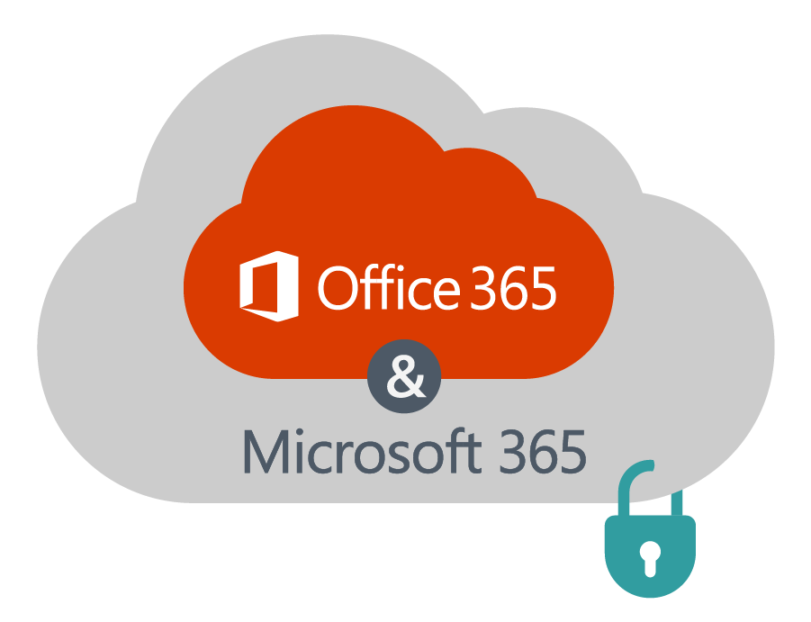
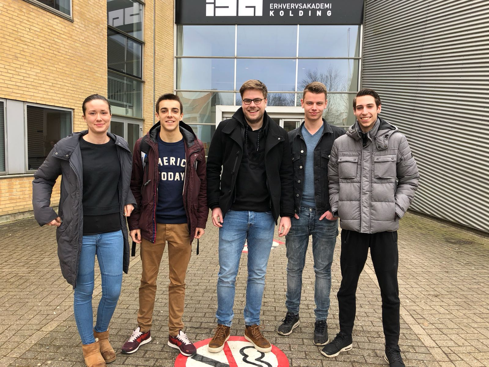
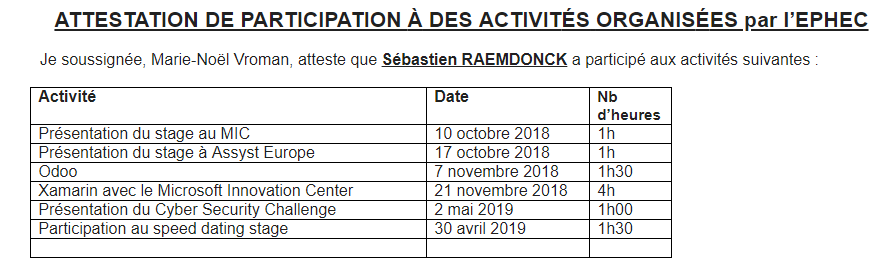
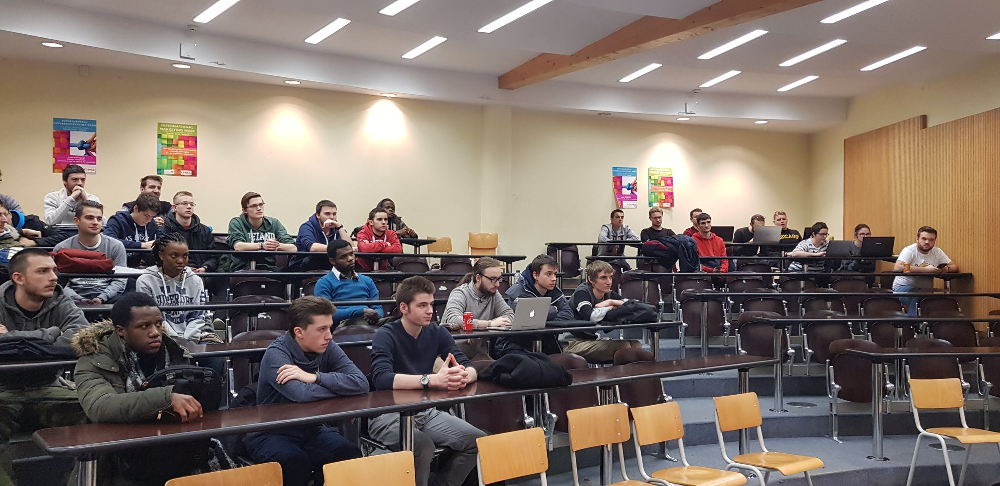
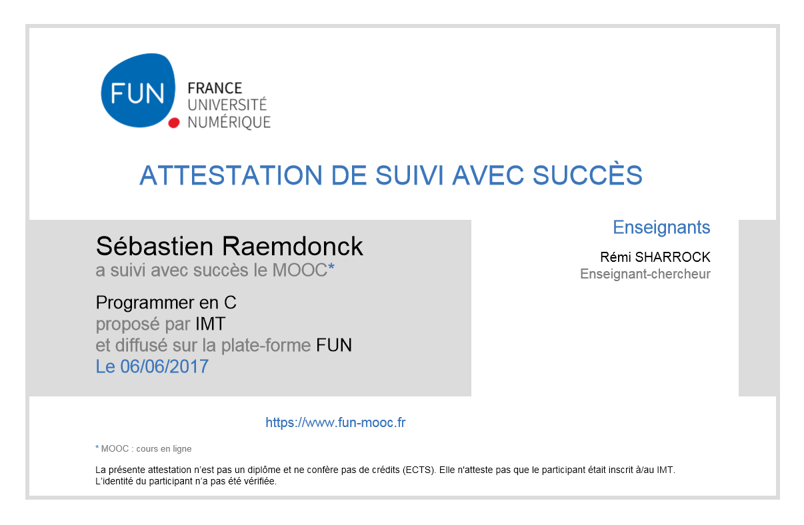
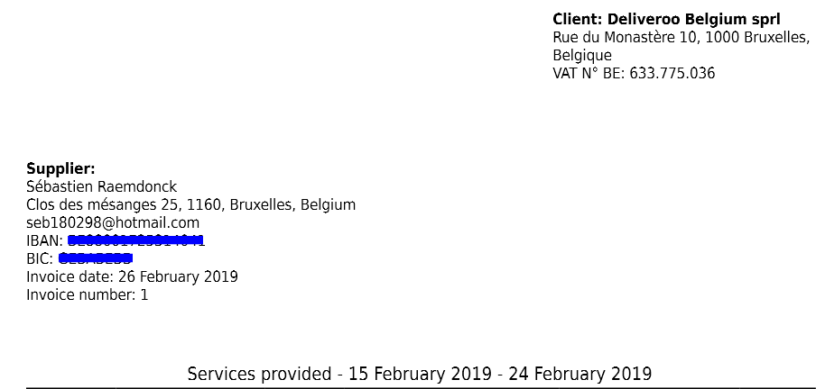

My Skills



| Nom | Date | Heure presté | Heure valorisé | info |
|---|---|---|---|---|
| Semaine internationale | 25/04/2018 | 5 jours | 10h | plus d'info |
| Salon Astrid User Day | 04/10/2018 | 9h | 9h | plus d'info |
| Présentation du stage au MIC | 10/10/2018 | 1h | 1h | plus d'info |
| Assyst Europe | 17/10/2018 | 1h | 1h | plus d'info |
| Présentation Odoo | 07/11/2018 | 1h30 | 1h30 | plus d'info |
| Cyber Security Challenge | 02/03/2019 | 1h | 1h | plus d'info |
| Formation Xamarin du MIC | 21/11/2018 | 4h | 4h | plus d'info |
| Formation BI et C# | 03/04 - 06/04/2018 | 5 jours | 10h | plus d'info |
| Formation C | 05/05/2017 | 10h | 10h | plus d'info |
| Participation au speed dating stage | 30/04/2019 | 1h30 | 1h30 | plus d'info |
| Job dating de la STIB | 24/01/2019 | 4h | 4h | plus d'info |
| IT job day 2017-2018 | 24/04/2018 | 1h | 1h | plus d'info |
| IT job day 2018-2019 | 30/04/2019 | 2h | 2h | plus d'info |
| Hockey | 2006 - | 13 ans | 10h | plus d'info |
| Deliveroo | janvier 2019 - | 5 mois | 10h | plus d'info |
76h |
J'ai 21 ans et je suis en 3ème année en technologie de l'informatique à l'EPHEC Louvain-La-Neuve. L'année prochaine, je compte faire un master en Business Analyst en alternance à l'ICHEC/ECAM. Je suis un amateur de sport et je fais du hockey, du vélo, du football et de la course à pied.
Mes qualités sont la curiosité, la patience, l'ouverture aux autres et le dévouement.
La semaine internationale est une formation proposée par des écoles à l’étranger dans un sujet précis. Elle réunit plusieurs étudiants venant de plusieurs pays à travers le monde. Nous avions le choix de réaliser semaine à l’EPHEC ou de partir. Je suis parti au Danemark à Kolding pour être précis où le thème de la semaine était le UX design pour les applications mobiles.
Cette semaine était très intéressante car j’ai pu découvrir de nouvelles choses sur le design des applications mobiles. J’ai pu aussi pratiquer mon anglais avec des étudiants en IT qui venaient de différents pays à travers l’Europe. Cette expérience était très sympa et j’ai noué des amitiés avec des Hollandais. Elle m’a aussi permis de voyager au Danemark qui est un pays très accueillant.

FermerLe 4 octobre 2018, moi et mes 3 autres collègues sommes partis à Bruxelles pour participer à l’événement Astrid User Days. Cet événement se trouvait dans un salon de 3500 m² avec plus de 80 exposants provenant de toute l'Europe et plus de 1500 visiteurs du secteur de la sécurité publique. Elle permet d'offrir une vue d'ensemble des applications actuelles et futures dans les domaines de la communication d'urgence, de la localisation, de la radiomessagerie, du suivi et de la traçabilité, de l'alerte, du dispatching, de la vidéo, des drones, etc.
Durant cette journée, nous avons pu découvrir et tester des technologies utiles pour le futur. Nous avons assisté à des conférences de Proximus et de Nokia qui portaient sur l’utilisation des nouvelles technologies de télécommunication et la sécurité informatique. Nous avons été tous les 4 très bien accueillis durant ce salon bien que nous étions les seuls jeunes.


Le Microsoft Innovation Center (MIC) aide les chefs d’entreprise et les professionnels de l’IT à développer leur business et leurs compétences. Ils sont situés à Mons et sont une ASBL public-privé qui existe depuis plus de 10 ans. Il propose de suivre des formations et de soutenir des développeurs dans des projets.
Je n’étais pas intéressé par leur stage car c’était dans le domaine du développement. Je trouve leur ASBL utile pour les développeurs qui veulent mettre en place un projet. Je recommanderais à quelqu’un d’aller dans leur centre si celui-ci à besoin d’aide en programmation.

FermerAssyst Europe est une entreprise IT dans les domaines du cloud, de la sécurité, création d’infrastructure réseau, … Ils sont situés à Braine-l'Alleud et compte une cinquantaine d’employés.
Ils nous ont fait une présentation de leur entreprise et des différents départements. Ils cherchaient un stagiaire qu'ils pourraient recruter par la suite. Malheureusement, l’entreprise se situait loin de chez moi sinon j’aurai été intéressé de réaliser mon stage chez eux.

La formation était réalisée par Technofutur TIC qui est situé à Gosselies. Nous nous sommes rendus là-bas durant les vacances de Pâques du 3 avril 2018 au 6 avril 2018. Nous avons eu la chance d'avoir deux formations.
Une introduction à la business intelligence sur Microsoft Power-BI et une autre pour la programmation en C#. J’ai pris conscience durant mon stage que ces deux formations étaient très intéressantes car ces 2 solutions sont beaucoup utilisées de nos jours.
Les formateurs de Technofutur sont très compétents et savent bien enseigner. Je n’ai pas de regret à avoir été à cette semaine de formation durant mes vacances.


Odoo est une suite d'applications professionnelles et open source couvrant tous les besoins d’une société : CRM, ERP, eCommerce, comptabilité, inventaire, point de vente, gestion de projets, … Ils sont une grande entreprise qui compte 500 employés à travers le monde.
Durant la conférence, ils nous ont présenté l’entreprise et les produits qu’ils proposent ainsi que les langages qu’ils utilisent et leurs méthodes de travail. Cette conférence m’a permis de mieux comprendre ce qu’était Odoo parce qu’on les voit souvent mais on ne sait pas ce qu’ils proposent.

Fermer
Xamarin est un Framework .NET pour le développement d’applications mobiles qui appartient à Microsoft et qui utilise le C#. Sa force est qu’il est multi-plateformes (IOS, Android et Windows phone) et open source.
Cette formation gratuite était présentée par le Microsoft Innovation Center qui est venu à l'EPHEC avec des programmeurs et l'un d'eux connaissait particulièrement bien Xamarin.
Ils nous ont fait un PowerPoint pour nous expliquer et nous faire comprendre l’utilité de ce Framework. Nous avons appris les bases pour pouvoir créer une application mobile. Nous avons réalisé cela sur Visual Studio.
Fermer
Le "Cyber Security Challenge" a pour but de sensibiliser les étudiants qui sont sur le point de finir leur formation. C'est une compétition de sécurité informatique, basée sur le principe de Capture The Flag, un jeu constitué de challenges réalisés par des équipes de 4 étudiants. Ces équipes devront ainsi résoudre le plus rapidement possible des challenges recouvrant une large variété de problèmes de sécurité.
Ce chalenge semblait intéressant mais tournée vers les gens qui s’y connaissent bien en sécurité bien qu’il y avait un chalenge plus facile pour ceux qui avaient moins de connaissances dans le domaine de la sécurité informatique.
Fermer

Lors d'un retour de stage, nous avons eu pour but de rencontrer différents élèves de deuxième année afin de leur expliquer nos diverses expériences au sein du stage en entreprise. Çela permet ainsi de préparer les étudiants de deuxième à leurs futures recherches de stage.
Cela nous a permis d’en apprendre plus sur l’expérience que les étudiants avaient acquise durant leur stage et de prendre connaissance de comment celui-ci s’était déroulé. J’aurais aimé moi aussi avoir un retour des stages des étudiants de 3ème année quand j'étais encore en 2ème année. Cela m’aurait permis de savoir plus facilement quel stage choisir.

Cette formation "programmer en C" était proposée par notre professeur de système d’exploitation (Madame Masson) afin de réaliser par la suite un projet en C.
Cette formation en ligne se trouve sur Fun MOOC. Elle était bien construite grâce à un formateur qui était présent. Ce site a pour but de nous former dans n'importe quel domaine de l’informatique et dans d’autres domaines.
Après cela, j’ai pu mieux comprendre le langague C et cela m’a aidé à réaliser le projet par après et de mieux comprendre le cours de systèmes d'exploitation.

FermerL'IT Jobs Days est un événement organisé par l'Ephec qui a pour objectif d'inviter de nombreuses entreprises dans le domaine de l’informatique. Nous avons pu donc rencontrer ces diverses entreprises qui ont présenté leurs activités et comment ils fonctionnent. Nous avons eu aussi l'opportunité de poser nos questions.
Durant cette journée, j’ai pu rencontrer la CIRB et cette entreprise m’a beaucoup intéressé. J’ai aussi pu rencontrer d’autres entreprises mais elles m’ont moins intéressé. Je n’ai pas eu beaucoup de temps car j’avais eu cours juste avant.

L'IT Jobs Days est un événement organisé par l'Ephec qui a pour objectif d'inviter de nombreuses entreprises dans le domaine de l’informatique. Nous avons pu donc rencontrer ces diverses entreprises qui ont présenté leurs activités et comment ils fonctionnent. Nous avons eu aussi l'opportunité de poser nos questions.
Grace à ces entretiens, nous avons eu une idée de ce que les entreprises proposent. Cela m’a permis d’avoir des contacts avec mon futur lieu de stage en rapport avec mon master en Business Analyst. Infrabel, Allianz et d’autres entreprises m’ont également intéressé.

J’ai commencé à jouer au hockey en club depuis mes 9 ans. Il se joue sur un terrain synthétique mouillé et il y a des 2 équipes de 11 joueurs munis d’un stick pour marquer des goals à partir d’une certaine zone.
Ce sport apprend à atteindre un objectif en équipe. La victoire s’obtient grâce à la cohésion dans l’équipe, la communication, le développement de stratégies, la confiance entre coéquipiers, …
Ce sport comporte beaucoup de règles et il m’a permis de m’épanouir dans une discipline assez technique.

Deliveroo est une entreprise de livraison de plats à domicile (à vélo ou en scooter) qui s’implante dans beaucoup de villes d’Europe. Elle emploie surtout des étudiants pour livrer les repas. Les restaurants payent pour pouvoir bénéficier du service de livraison de Deliveroo. L’entreprise est présente dans treize pays, 500 villes et collabore avec 50 000 livreurs et 50 000 restaurants.
J’ai commencé à travailler pour Deliveroo en ce début d’année grâce à un ami qui m’a conseillé de rejoindre l’entreprise. Je roule un à deux soirs par semaine pour eux pendant 2-3 heures à travers Bruxelles.
Ce job me permet de me dépenser tout en gagnant de l’argent. Les autres livreurs au sein de l’entreprise sont sympas et on fait de chouettes connaissances. J’apprends à gérer différentes situations à travers cet emploi et à communiquer avec des clients grâce à l'application de l'entreprise.

FermerLa STIB est la société de transports en commun dans la région bruxelloise qui déssert ses 19 communes. Elle compte 9000 employés avec plus de 300 fonctions différentes. Elle a un réseau de trams, bus et métros.
Madame Vroman nous a communiqué cet événement via Facebook. J’ai directement été intéressé de faire partie de l’expérience. L’évènement se déroulait en soirée le jeudi 24 janvier 2019 dans leurs bureaux. Nous avons d’abord eu droit à une présentation de l’entreprise puis ensuite une interview de recrutement.
Cette expérience m’a beaucoup plu car j’ai pu voir à quoi ressemblait une interview de recrutement et les gens là-bas étaient très sympathiques. Je serais intéressé à l’avenir de travailler pour la STIB parce leurs infrastructures sont performantes et l’ambiance générale au sein du personnel semble bonne.